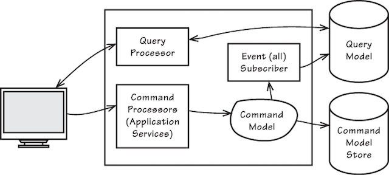

Feb 2019 Tech. Talk v1
- A Collection of 5 Micro Talks -
- Lay of the Land -
Heads UP!
Raise relevant questions to understand the business benefits!
- Be Open and Make No Assumptions -
What you think is what you get!
Specific & relevant details helps you think through a better solution!
- Stay Focused -
Prespectives & Concerns Differ!
Understand Business Needs vs Functionalities vs Implementation from the Stakeholder Perspective!
- Be an Enabler; Listen, Acknowledge & Accept Non Technical Needs! -
Context
Whew! So, What Next?
Next Steps
- Build Functionality first, then Iterate addressing the NFRs -
- Fret Not! Help is not far! -
Data first, Design & Implementation follows next...
Core Concepts - TDD, BDD, DDD Architecture & Design - Architectural Styles & Views - Technology Selection (How & Why) - Polyglot DataStores - NFRs & Tradeoffs Engineering - Best Practices - Design Patterns - Design Principles (SOLID) - Code Smells - CI-CD & DevOPS first culture - Programming Paradigms (Functional, Imperative)
Core Concepts ...

Benefits of BDD BDD Frameworks Book: BDD in Action BDD - Introduction from Dan North
TDD Example Introduction to TDD
CQRS & Domain Driven Design Awesome DDD - Nick Chamberlain DDD Example DDD Books Domain Driven Design - Reference The Ideal Domain-Driven Design Aggregate Store? DDD & MicroServices
Architecture & Design ...
*** Remember All in One Box? (Slide 4.5) NFRs / QA (Quality Attributes)


- Separation of Concerns - Simple Logical Decomposition, Top Down with Isolation -
Layered Architecture N-Tier
-Allow an application to equally be driven by users, programs, automated test or batch scripts, and to be developed and tested in isolation from its eventual run-time devices and databases-
Hexagonal Architecture Hexagonal Architecture FAQ Hexagonal Architecture Example #1 Hexagonal Architecture Example #2

- Separate FLow for Queries (Reads) and Create (Writes) -
CQRS

- Events are Immutable! There are no Updates & Deletes. Changes in state are stored as new events -
Event Sourcing Concept - Martin Fowler Event Sourcing Example #1 Event Sourcing Example #2

- Different Systems integrate using Domain Events -
Event Driven Architecture Event Driven Data Management for Microservices Event Driven Architecture - Example #1 Event Driven Architecture - Example #2 - Saga Pattern
- MicroServices are thin vertical slices of Business Functions
Independently Deployable and Scalable -
MicroServices Resource Guide MicroServices (as defined by Martin Fowler) Sam Newman on MicroServices! MicroServices Architecture MicroServices - What, When & How Chris Richardson on MicroServices An Introduction to MicroServices from NGINX
(7 parts article series)
Microsoft Patterns & Practices Microsoft Application & Architecture Guide Shaping Software - Architecture Clean MicroService Architecture Coding the Architecture Software & Systems Architecture
- RDBMS's for transactional needs (w replication), NoSQL for Scalability -
Microsoft Patterns & Practices - Data Guidance


- Choosing between Availability, Consistency & Partition Tolerance -
- Logical, Logical Connectivity Views -
yED from yWorks
- Physical View -
- Class & Sequence Diagrams -
PlantUML for Declarative diagrams UML Simplified ArgoUML UMLet
Engineering ...
Follow Alistair Cockburn - Agile & Engineering Guru! Microsoft Engineering Best Practices & Guidance


A Practical Intro to Functional Programming
Design Patterns

Design Patterns Catalog Patterns & Principles w Examples - Exhaustive List
Principles Wiki
NFR's : Quality....
Clean Code Cheatsheet Software Craftsmanship Essential Programming Books - Bibles Influential CS Books Code Smells
NFR's : Performance
Performance Testing Awesome Web Performance Optimization Path To Performance - Podcast
C# Internals C# async/await CLR via C# Java Performance Tuning


Concurrency vs Parallelism Threading in C#
Grokking Algorithms!
A Beginners guide to big-o-notation Big-O notation in 5 minutes The basics Big O Notation explained Big O Notation: A Few Examples Big O CheatSheet Algorithms for dummies Algorithimic Complexity Understanding Big O
NFR's : Scalability
Awesome Scalability Microsoft Improving Perfmormance & Scalability

- Revisiting DB Scaling & CAP -

NFR's : HA & Reliability
Scalability & HA go hand in hand!
HA Calls for more than one server;
An Active / Active HA cannot be possible without either Scale UP or Scale Out

Master Slave (Active / Passive)

Master Slave : Peer - Peer (Active / Active)

Sharding a NoSQL Database (Partition Data to manage scale)
Replication set (Active / Active, Active / Passive)
NFR's : Securing the System
Microsoft Patterns & Practices Guidance - Security Microsoft Web Application Security: Threats and Countermeasures Azure Security OWASP Vulnerability Testing vs Penetration Testing
Operational needs
JConsole VisualVM - All in One Java troubleshooting tool JRockit Mission Control Debugging .Net Framework Apps
Links
- The Single Most absolute reference and
superbly organized collection of resources for system design -
Sources every engineer & architect should follow!
InfoQ Tech. Hub High Scalability - Real Time Architectures DZone Tech. Hub HackerNoon - Bleeding edge of tech. Hacker News
There's much much more, and these links give you good starting points
NetFlix OSS Everything about MicroServices Cloud Foundry Cloud Native Computing Foundation A curated list of awesome resources Foundations of Software Engineering System Design Inputs Awesome Software Craftsmanship Awesome BigData - All about data stores & databases Microservice Patterns
Contributors
Authors:
SivaramaSundar Concept, Storyboard, Content
Karthik Kalkur - v1 - Arch. Styles, NoSQL; Reviews
Suresh Balasubramaniam - v3, v4 - Reviews; Restructuring
Thanu Sunderasan - v3, v4 - Reviews; Restructuring
Manas Ranjan Dash Reviews & Debates
Amit Saluja Reviews & Debates
Inspiration & Support:
Rashmi Subbanna
Ashwini Karumbaiah
Rajat Pandit
Credits:
reveal.js JS Presentation Framework
stripthis (kesiev) JS Comic Framework
License:
MIT